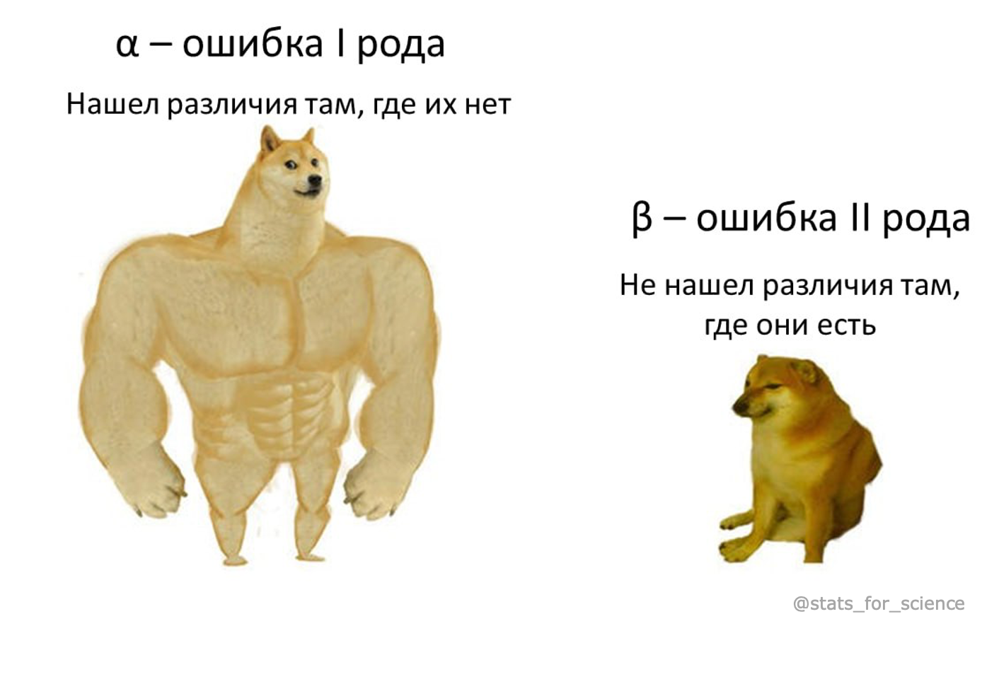

Тест Стьюдента, Велча и Манн-Уитни на малых выборках
Интерактивные симуляции ошибки I рода и мощности
statistics
simulation
Author
Elena U
Published
June 7, 2026
Введение
В предыдущем посте я разбирала как работает тест Стьюдента и тест Велча на больших выборках (n = 1000–10000). Краткий вывод оттуда: тест Велча надёжнее при неравных дисперсиях и разных размерах выборок, так как лучше контролирует ошибку первого рода.
Но в научных исследованиях, например в биологии, медицине выборки обычно не такие большие, может быть всего 5–30 наблюдений на группу. В прошлый раз обещала рассмотреть отдельно, как работают тесты на малых выборках. В этот раз я подготовила интерактивные симуляции, которые работают прямо в браузере, можно менять параметры и наблюдать, как это влияет на ошибку I рода и мощность тестов.
NoteВспомним: определение ошибок I и II рода (а также мощности)
Ошибка I рода — вероятность найти различия, когда их нет (ложноположительный результат). Должна быть ≈ заданному уровню α (обычно 0.05). Подробнее писала здесь.
Мощность (1−β) — вероятность найти различия, когда они действительно есть. Чем выше, тем лучше (обычно стараются иметь уровень мощности не меньше 0.8).

Надежный статистический тест должен контролировать ошибку I рода на уровне значимости α и при этом обладать высокой мощностью для обнаружения реального эффекта.
Непараметрический тест, основанный на рангах. Не требует нормальности распределения выборочных средних. Статистика \(U\) считается по числу пар \((x_i, y_j)\), где \(x_i > y_j\), и при \(n_1, n_2 > 5\) сопоставляется с нормальным приближением:
В числителе — поправка на непрерывность (−0.5): так как дискретная ранговая статистика приближается непрерывным распределением. На очень малых выборках (n ≈ 5–6) из-за этой поправки и общей дискретности данных нормальное приближение теста становится довольно консервативным (фактическая доля ложных срабатываний падает ниже заявленного \(\alpha\)).
Тест Бруннера-Мюнцеля
Робастный ранговый тест, который в отличие от Манна-Уитни, не требует одинаковых дисперсий и форм распределений (см. Brunner & Munzel, 2000). Каждое наблюдение ранжируется и в объединённой выборке (\(R_{ki}\)), и внутри своей группы (\(R^{(k)}_{ki}\)). Статистика:
где \(\overline{R}_{k}\) — средний ранг группы \(k\) в объединённой выборке. Ключевое отличие от Манна-Уитни: дисперсия рангов \(S_k^2\) оценивается отдельно для каждой группы, поэтому тест устойчив к гетероскедастичности. Статистика \(W\) сравнивается с распределением Стьюдента со степенями свободы по Саттертуэйту (как у теста Велча):
NoteВспомним: нулевая гипотеза Манна-Уитни не о равенстве средних
Из-за восприятия теста Манна-Уитни как непараметрического аналога теста Стьюдента может сложиться впечатление, что он тоже сравнивает средние.
Однако это не так: нулевая гипотеза — это \(\Pr\{X>Y\} = \Pr\{X<Y\}\), то есть «значения из одной группы не склонны быть систематически больше значений из другой». Такое условие называют стохастическим равенством, а его нарушение (например, \(\Pr\{X>Y\} > \Pr\{X<Y\}\)) — вероятностным доминированием. Только при жестком допущении одинаковой формы и дисперсии распределений этот тест становится эквивалентен сравнению медиан или оценке величины сдвига (location shift).
NoteТонкость с записью нулевой гипотезы
Формулировку \(\Pr\{X>Y\} = 0.5\) часто пишут как сокращение, но строго она верна только для непрерывных распределений. Для порядковых и дискретных количественных величин \(\Pr\{X = Y\} \neq 0\), поэтому \(\Pr\{X>Y\}\) в принципе не равно \(0.5\). Корректная общая запись — \(\Pr\{X>Y\} = \Pr\{X<Y\}\) (спасибо Евгению Бакину за уточнение).
Практическое следствие: Если у групп разные дисперсии, стандартный аппарат теста ломается. Формула знаменателя (стандартной ошибки рангов) требует полной идентичности форм распределений (\(F = G\)). При гетероскедастичности эта оценка становится неверной, тест занижает реальную ошибку и начинает завышать долю ложных срабатываний в A/A-тестах.
Многие при виде неравных дисперсий, ненормального распределения данных переходят на непараметрику, считая её более устойчивой. Но Манн-Уитни не решает проблему гетероскедастичности, он тоже подвержен ей и даёт ложные срабатывания при равных средних. Если дисперсии разные, более правильно использовать тест Велча, а для сравнения ранговых распределений — тест Бруннера-Мюнцеля (Brunner-Munzel test), который корректно пересчитывает стандартную ошибку для каждой группы отдельно (формула теста выше под катом).
А на симуляциях подробно это проиллюстрируем!
Интерактивная симуляция
Настройте параметры ниже и нажмите «Запустить». Симуляция многократно генерирует пары выборок из генеральных совокупностей с заданными параметрами и считает для каждого теста, в какой доле случаев была отклонена H0 (p-value < α).
Параметры
Code
// Кастомный селектор сценариев, сгруппированный в два блока:// H₀ верна (A/A — ошибка I рода) и H₀ неверна (A/B — мощность).viewof scenario = {const groups = {"H₀ верна — ошибка I рода (A/A)": ["Сценарий 1: равные N и SD","Сценарий 2: равные N, разные SD","Сценарий 3: разные N, разные SD","Сценарий 4: экспоненциальное, N, SD равны" ],"H₀ неверна — мощность (A/B)": ["Сценарий 5: есть эффект (Δ > 0), равные n и SD","Сценарий 6: выбросы (логнормальное)","Сценарий 7: разные SD" ] };const initial ="Сценарий 1: равные N и SD";constroot=document.createElement("form");root.onsubmit= e => e.preventDefault();root.style.cssText="display:flex; gap:32px; flex-wrap:wrap;";let num =0;// сквозной номер сценария 1..7 для якорей #scenario-NObject.entries(groups).forEach(([title, opts]) => {const col =document.createElement("div");const h =document.createElement("div"); h.textContent= title; h.style.cssText="font-weight:600; font-size:13px; margin-bottom:8px; color:#333;"; col.append(h); opts.forEach(opt => { num +=1;const row =document.createElement("div"); row.style.cssText="display:flex; align-items:center; gap:8px; margin-bottom:5px; white-space:nowrap;";const label =document.createElement("label"); label.style.cssText="display:flex; align-items:center; gap:8px; font-size:14px; cursor:pointer;";const input =document.createElement("input"); input.type="radio"; input.name="scenario-choice"; input.checked= (opt === initial); input.style.accentColor="#4a90d9"; input.addEventListener("change", () => {root.value= opt;root.dispatchEvent(newCustomEvent("input", { bubbles:true })); }); label.append(input,document.createTextNode(opt));// ссылка к разбору этого сценария в текстеconst link =document.createElement("a"); link.href=`#scenario-${num}`; link.textContent="↓ разбор"; link.title="Перейти к разбору сценария в тексте"; link.style.cssText="font-size:12px; color:#4a90d9; text-decoration:none; white-space:nowrap;"; row.append(label, link); col.append(row); });root.append(col); });root.value= initial;returnroot;}
Code
scenarioDefaults = {const map = {"Сценарий 1: равные N и SD": { n1:15,n2:15,sd1:1,sd2:1,dm:0,dist:"Нормальное" },"Сценарий 2: равные N, разные SD": { n1:15,n2:15,sd1:1,sd2:3,dm:0,dist:"Нормальное" },"Сценарий 3: разные N, разные SD": { n1:30,n2:8,sd1:1,sd2:3,dm:0,dist:"Нормальное" },"Сценарий 4: экспоненциальное, N, SD равны": { n1:15,n2:15,sd1:1,sd2:1,dm:0,dist:"Экспоненциальное" },"Сценарий 5: есть эффект (Δ > 0), равные n и SD": { n1:15,n2:15,sd1:1,sd2:1,dm:1.0,dist:"Нормальное" },"Сценарий 6: выбросы (логнормальное)":{ n1:15,n2:15,sd1:1,sd2:1,dm:0.5,dist:"Логнормальное (выбросы)" },"Сценарий 7: разные SD": { n1:50,n2:15,sd1:0.5,sd2:5,dm:2.5,dist:"Нормальное" }, };return map[scenario];}
// Снимок параметров, по которому считается симуляция.// Обновляется только при нажатии кнопки «Запустить» (см. ниже).mutable simConfig = ({n1:15,n2:15,sd1:1,sd2:1,delta_mean:0,alpha:0.05,n_sim:1000,distrib:"Нормальное"})
// Два блока рядом: слева — данные одной случайной итерации,// справа — распределение p-value по всем итерациям (2×2 по тестам).{// ── ЛЕВО: пример одной итерации (по simConfig) ──const { n1, n2, sd1, sd2, delta_mean, distrib } = simConfig;const a =generateSample(n1,0, sd1, distrib);const b =generateSample(n2, delta_mean, sd2, distrib);const exData = [...a.map(v => ({ value: v,group:`Группа 1 (n=${n1})` })),...b.map(v => ({ value: v,group:`Группа 2 (n=${n2})` })) ];const examplePlot = Plot.plot({width:320,height:300,marginLeft:38,x: { label:"Значение",labelArrow:"none" },y: { label:"частота",labelArrow:"none" },fy: { axis:null },color: {domain: [`Группа 1 (n=${n1})`,`Группа 2 (n=${n2})`],range: ["#4a90d9","#d4537e"] },facet: { data: exData,y:"group" },marks: [ Plot.rectY(exData, Plot.binX({ y:"count" }, { x:"value",fill:"group",thresholds:14 })), Plot.ruleY([0]) ] });// ── ПРАВО: гистограммы p-value (2×2 по тестам) ──const { alpha } = simResult;const edges = [];for (let e =0; e <=1.0001; e +=0.05) edges.push(+e.toFixed(4));if (!edges.includes(alpha)) { edges.push(alpha); edges.sort((x, y) => x - y); }functionhistPlot(pvals, title) {const d = pvals.map(p => ({ p,sig: p < alpha ?"p < α":"p ≥ α" }));const plot = Plot.plot({width:200,height:150,marginLeft:34,x: { label:"p-value",domain: [0,1],labelArrow:"none" },y: { label:"частота",labelArrow:"none" },color: { domain: ["p < α","p ≥ α"],range: ["#e24b4a","#7cb342"] },marks: [ Plot.rectY(d, Plot.binX({ y:"count" }, { x:"p",fill:"sig",thresholds: edges })), Plot.ruleY([0]) ] });const cell =document.createElement("div");// компактный заголовок фиксированной высоты — под высоту легенды слева cell.innerHTML=`<div style="font-weight:600; font-size:14px; height:24px; display:flex; align-items:center;">${title}</div>`; cell.appendChild(plot);return cell; }const pvGrid =document.createElement("div"); pvGrid.style.cssText="display:grid; grid-template-columns:repeat(2, max-content); gap:6px 10px;"; pvGrid.append(histPlot(simResult.pSt,"Стьюдент"),histPlot(simResult.pWe,"Велч"),histPlot(simResult.pMW,"Манн-Уитни"),histPlot(simResult.pBM,"Бруннер-Мюнцель") );// ── подпись к p-value (реактивная) ──const isH0 = simResult.delta_mean===0;const pvText = isH0?`<strong>H₀ верна</strong> (Δ = 0): p-value должны быть распределены <strong>равномерно</strong>. Высокий красный столбец у 0 = слишком много ложных срабатываний.`:`<strong>Есть эффект</strong> (Δ = ${simResult.delta_mean}): распределение смещено <strong>влево</strong>, чем мощнее тест — тем выше красный столбец у 0.`;const headStyle ="font-weight:600; margin:0 0 4px;";const capStyle ="font-size:13px; color:#555; margin:0;";// Шапки колонок (ряд 1 грида)const leftHead =document.createElement("div"); leftHead.innerHTML=`<div style="${headStyle}">Пример одной итерации</div> <div style="${capStyle} max-width:320px;">Как выглядят выборки в одной случайной итерации при текущих параметрах.</div>`;const rightHead =document.createElement("div"); rightHead.innerHTML=`<div style="${headStyle}">Распределение p-value</div> <div style="${capStyle} max-width:420px;">${pvText}</div>`;// Левая ячейка графика: легенда той же высоты (22px), что и заголовки// гистограмм справа → области графиков встают на одну горизонталь.const chip = (color, text) =>`<span style="display:inline-flex; align-items:center; gap:5px;"> <span style="width:12px; height:12px; border-radius:2px; background:${color}; display:inline-block;"></span>${text}</span>`;const leftPlotCell =document.createElement("div"); leftPlotCell.innerHTML=`<div style="height:24px; display:flex; gap:14px; align-items:center; font-size:13px; color:#333;">${chip("#4a90d9",`Группа 1 (n=${n1})`)}${chip("#d4537e",`Группа 2 (n=${n2})`)}</div>`; leftPlotCell.appendChild(examplePlot);// ── CSS-grid 2×2: ряд 1 — шапки, ряд 2 — графики. Grid сам ставит// оба графика на одну горизонталь, не завися от высоты подписей. ──const wrap =document.createElement("div"); wrap.style.cssText="display:grid; grid-template-columns:max-content max-content; column-gap:24px; row-gap:8px; align-items:start; justify-content:start;"; wrap.append(leftHead, rightHead, leftPlotCell, pvGrid);return wrap;}
Результаты
Code
// ── Карточки с результатами ──{const { alpha, delta_mean } = simResult;const isH0 = delta_mean ===0;functionbadge(rate) {if (isH0) {if (rate <= alpha *1.3) return { cls:"ok",text:"✓ норма" };if (rate <= alpha *2.0) return { cls:"warn",text:"~ повышена" };return { cls:"bad",text:"✗ завышена" }; } else {if (rate >=0.8) return { cls:"ok",text:"✓ высокая" };if (rate >=0.5) return { cls:"warn",text:"~ средняя" };return { cls:"bad",text:"✗ низкая" }; } }const tests = [ { name:"Стьюдент",rate: simResult.rateSt }, { name:"Велч",rate: simResult.rateWe }, { name:"Манн-Уитни",rate: simResult.rateMW }, { name:"Бруннер-Мюнцель",rate: simResult.rateBM }, ];const badgeStyle = {ok:"background:#e6f4e2; color:#2d6a1e; padding:2px 8px; border-radius:4px; font-size:12px;",warn:"background:#fff3cd; color:#856404; padding:2px 8px; border-radius:4px; font-size:12px;",bad:"background:#fce4e4; color:#a32d2d; padding:2px 8px; border-radius:4px; font-size:12px;", };const label = isH0?"% ложных срабатываний (ошибка I рода)":"% обнаруженных различий (мощность)";const html =` <div style="display:grid; grid-template-columns:repeat(auto-fit, minmax(150px, 1fr)); gap:12px; margin:1rem 0;">${tests.map(t => {const b =badge(t.rate);return`<div style="background:#f8f9fa; border-radius:8px; padding:14px 16px;"> <div style="font-size:12px; color:#666; margin-bottom:4px;">${t.name}</div> <div style="font-size:24px; font-weight:600;">${(t.rate*100).toFixed(1)}%</div> <div style="margin-top:6px;"><span style="${badgeStyle[b.cls]}">${b.text}</span></div> <div style="font-size:11px; color:#999; margin-top:4px;">${label}</div> </div>`; }).join("")} </div> <div style="background:#f0f4f8; padding:10px 14px; border-radius:6px; font-size:13px; color:#555; line-height:1.6; margin-bottom:1rem;">${isH0?`<strong>H₀ верна</strong>: ожидаемая доля ложных срабатываний ≈ α = ${alpha}. Если тест даёт значительно больше — он слишком часто находит различия там, где их нет.`:`<strong>H₀ неверна</strong>: Δ = ${delta_mean}. Смотрим, какой тест чаще обнаруживает реальные различия. Мощность > 80% считается хорошей.`} </div> `;const el =document.createElement("div"); el.innerHTML= html;return el;}
Разбор надежности тестов
Для анализа надежности тестов нужно проверить два пункта: оценка доли ошибок первого рода при верности нулевой гипотезы и оценка мощности. Для краткости можно это назвать искусственным A/A и A/B тестом.
NoteA/A vs A/B
A/A-тест (\(Δ = 0\)) – обе группы взяты из генеральных совокупностей с одинаковыми средними. Нулевая гипотеза о равенстве средних верна, реального эффекта нет, поэтому отклонение нулевой гипотезы – это ошибка I рода. Здесь мы проверяем, держит ли тест заявленный уровень α.
A/B-тест (\(Δ \neq 0\)) – средние групп (истинные средние генеральных совокупностей) действительно различаются. Здесь мы измеряем мощность: как часто тест замечает реальный эффект.
Помните: мощность имеет смысл сравнивать между тестами только тогда, когда они одинаково держат α в A/A. Иначе высокая мощность может быть просто следствием завышенной ошибки I рода.
A/A-тесты — контроль ошибки I рода
Сценарий 1: H₀ верна, размер выборок и дисперсии равны
Все тесты должны давать долю ошибок первого рода ≈ \(\alpha\), и действительно, все четыре теста держат α на заданном уровне. Гистограммы p-value близки к равномерному распределению.
✅ Все четыре теста близки к заданной α.
Сценарий 2: H₀ верна, размеры выборок равны, дисперсии разные
Неравенство дисперсий не сильно влияет на характеристики теста Стьюдента при равных размерах выборок, это было показано и в статье для больших выборок. Непараметрические тесты тоже работают корректно.
✅ Все четыре теста близки к заданной α.
Сценарий 3: H₀ верна, разные дисперсии и размер выборок, при этом в меньшей выборке дисперсия больше
Это пример, где тест Стьюдента начинает работать хуже: маленькая выборка с большой дисперсией. В статье для больших выборок (9000 vs 1000) Стьюдент давал до 24% ложных срабатываний. На малых выборках эффект тоже заметен, в этом сценарии около 25% вместо 5%. Велч держит α (≈ 5%).
Манн-Уитни тоже завышает ошибку первого рода (≈ 13%) — при разных дисперсиях у него ломается формула стандартной ошибки (разбирали выше). А тест Бруннера-Мюнцеля этого недостатка лишён и держит α заметно лучше (≈ 6%) — многие поэтому рекомендуют по умолчанию именно его.
❌ Тест Стьюдента, тест Манна-Уитни
✅ Тест Велча, тест Бруннера-Мюнцеля
Предлагаю менять n₂ при фиксированных n₁ = 30, SD₁ = 1, SD₂ = 3, Δ = 0, чтобы посмотреть, как меняется ошибка первого рода в тесте Стьюденте в зависимости от дисбаланса:
n₂ ≈ n₁: это сценарий 2, с ошибкой первого рода все ок.
n₂ << n₁ (маленькая выборка с большой дисперсией): Стьюдент завышает α — вплоть до ~40% при n₂ = 5, SD₂ = 4;
n₂ >> n₁ (большая выборка с большой дисперсией): Стьюдент, наоборот, занижает α, становясь излишне консервативным.
Экспоненциальное распределение сильно асимметрично. Как справятся тесты при проверке ошибки I рода?
✅ При равных n все четыре теста контролируют ошибку первого рода в пределах нормы даже на малых выборках.
Дальше предлагаю самостоятельно проверить, что будет с тестами при разных дисперсиях и размере выборок, а мы пока переходим к работе тестов “при гипотезе” (как сказал бы уважаемый Матвей Славенко).
A/B-тесты — анализ мощности
Сценарий 5: H₀ неверна, есть реальный эффект, размеры выборок и дисперсии равны
При Δ = 1 и n = 15 мощность всех тестов ~ 70–75%. При увеличении n до 25, мощность вырастет до > 90%.
✅ Манн-Уитни и Бруннер-Мюнцель на нормальных данных немного уступают параметрическим тестам в мощности — это неудивительно, так как перевод в ранги обычно приводит к небольшой потере мощности (здесь MW ≈ 71%, остальные ≈ 74%).
Сценарий 6: H₀ неверна, есть выбросы – преимущество ранговых тестов
Разрыв значительный: мощность Манна-Уитни ≈ 75% и Бруннера-Мюнцеля ≈ 74% против ≈ 43% у обоих t-тестов. Дело в том, что одно экстремальное значение сильно увеличивает выборочную дисперсию (знаменатель дроби), и t-статистика проседает. Ранговые тесты к таким выбросам устойчивы.
Сценарий 7: H₀ неверна, в меньшей выборке дисперсия больше – у теста Велча проблемы?
Стьюдент показывает высокую мощность (≈ 80%), Велч заметно ниже (≈ 43%), Манн-Уитни ≈ 58%, Бруннер-Мюнцель ≈ 34%. Кажется, что тест Стьюдента лучший, но это не совсем так: при таком же дисбалансе и верности нулевой гипотезы (см. Сценарий 3) он завышает ошибку I рода. Мощность сравнима между тестами только при одинаково контролируемой α.
Тест Велча отражает большую неопределённость маленькой шумной группы через уменьшенные степени свободы (df ≈ 14 вместо 63). Низкая мощность здесь неудивительна, так как надёжно поймать эффект при такой комбинации (мало наблюдений + огромная дисперсия во второй группе) объективно трудно. Тест Велча контролирует ошибку первого рода на уровне альфа, что приводит к большей консервативности и потери мощности, это неизбежное следствие.
Все дальнейшие комбинации параметров доступны на ваш вкус, наверняка здесь еще остались интересные инсайты.
Выводы
На основании симуляций на малых выборках (n = 5–50):
Поведение тестов на малых выборках
Сценарий
Стьюдент
Велч
Манн-Уитни
Бруннер-Мюнцель
A/A — контроль ошибки I рода
Равные SD, равные n
✅
✅
✅
✅
Разные SD, равные n
✅
✅
✅
✅
Разные SD, разные n (в меньшей выборке большее SD)
❌
✅
❌
✅
A/B — оценка мощности
Нормальные данные, равные SD, n
✅
✅
🟡
✅
Выбросы / тяжёлые хвосты
🟡
🟡
✅
✅
Разные SD, разные n (в меньшей выборке большее SD)
⚠️
🟡
🟡
🟡
Рекомендации:
По умолчанию используйте тест Велча — он надёжен во всех разобранных ситуациях, как на больших, так и на малых выборках.
Классический тест Стьюдента имеет смысл только когда вы уверены в равенстве дисперсий, но если это так, результаты практически не будут отличаться от теста Велча.
Тест Бруннера-Мюнцеля — если нужна непараметрика и дисперсии/формы распределений разные. Он сохраняет устойчивость рангового подхода к выбросам (как Манн-Уитни), но при этом держит α при гетероскедастичности (как Велч) — можно приближенно сказать, что это ранговый аналог Велча (спасибо Евгению Бакину и чатику BioStat <- R за наводку).
А как же позиция «Велч не нужен по умолчанию»?
Есть точка зрения, что менять Стьюдента на Велча по умолчанию не стоит (разбор от X5 Tech, Серега, про тебя помню). Аргументы такие:
Велч урезает степени свободы и теряет мощность.
Чистая гетероскедастичность редка (аргумент Sawilowsky): «мы никогда не встречали воздействия, которое меняет дисперсии, оставляя средние строго равными» — на практике эффект двигает и среднее, и разброс, так что сценарии A/A с разными SD при Δ = 0 искусственны.
На больших сбалансированных выборках (классический A/B-тест 50/50) Стьюдент и так контролирует α при любой дисперсии, поэтому заменять его не на что.
Это все валидно, но не противоречит выводам выше:
Потеря мощности у Велча почти нулевая при равных n. В симуляциях при n₁ = n₂ разница мощности Стьюдента и Велча — доли процентного пункта, даже при сильно неравных дисперсиях. Заметная потеря возникает только в случае «малые N + дисбаланс + сильно неравные SD», но именно там у Стьюдента нарушается α. Так что тут никак иначе, мы либо лучше контролируем ошибку первого рода и чуть теряем в мощности, либо ошибка первого рода серьезно завышается, но зато не теряем в мощности. Тут скорее нужно оценить, какая ошибка для нас страшнее и неприятнее – не найти реальный эффект или найти эффект, где его нет (читай: не раскатить успешный A/B или раскатить “серый” A/A).
A/B-тесты vs малые выборки. В продуктовых A/B-тестах выборки большие, а сплит контролируемый (часто 50/50, хотя бывают и варианты с тестированием только на 10% аудитории). В случае равного сплита Стьюдент и Велч практически тождественны, и нет большой разницы, что именно применять. В данном посте мы разобрали подробно малые неконтролируемые выборки в биологии и медицине, где исследователь не управляет ни балансом групп, ни их дисперсиями. Кроме этого, в медицине часто ошибка первого рода страшнее, а именно ее тест Велча контролирует на заданном уровне.
Иными словами: если вы уверены в равных n и равных дисперсиях, то Стьюдент и Велч дадут одно и то же. А если вы не уверены, то тест Велча обычно точнее (хоть и консервативнее, но такова жизнь).
ImportantГлавный вывод
Рекомендация предыдущего поста использовать тест Велча по умолчанию подтверждается на малых выборках. Проблема теста Стьюдента с неравными дисперсиями и разными n проявляется и на небольших выборках (n = 5–30).
Контраргумент «Велч теряет мощность» справедлив в основном для больших сбалансированных A/B-тестов; на небольших выборках в науке цена этой потери мощности близка к нулю, а вот защита от завышенной ошибки I рода реально важна.